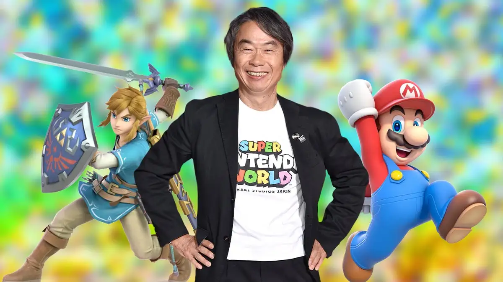

Shigeru Miyamoto

Picture Information:
Description of the image: Shigeru Miyamoto, the inventor of Nintendo, posing in front of Link from The
Legend of Zelda and Mario. Two iconic characters from Nintendo; many games have been made from both
characters. To be honest, I like Mario more.
Image file type information: PNG and JPG background file
Why did you choose the image? This man created a company that has made so many games that children
and adults alike have spent hundreds of hours on. His game company was a large part of my childhood, and
he deserves some recognition.
Sources: